Bài viết chỉ mang tính chất tham khảo
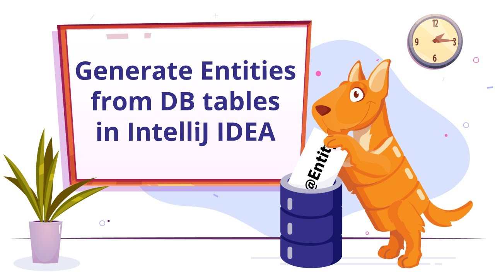
1. Cài Plugins
Tại giao diện màn hình Intellij, chọn File -> Settings
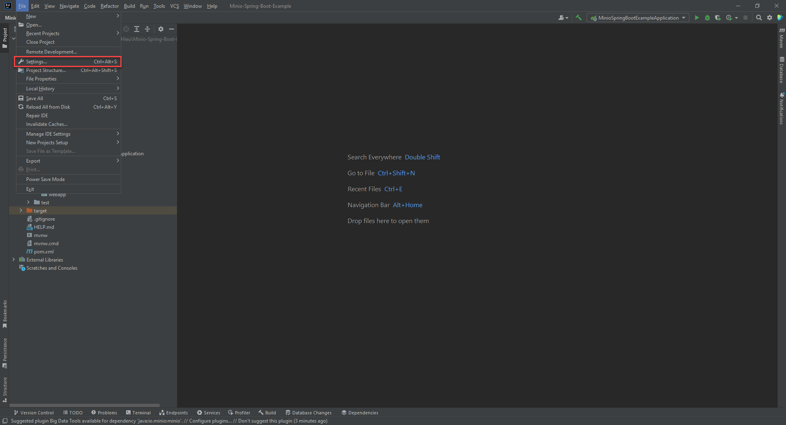
Tiếp theo chọn Plugins -> Marketplace -> Search từ khóa "JPA Buddy" -> Install
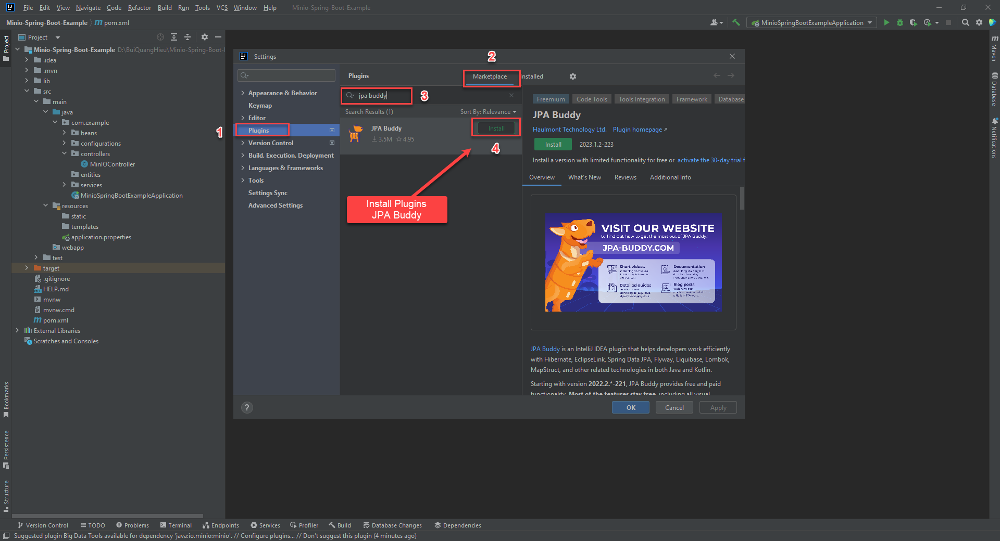
Quá trình cài đặt hoàn tất, chọn Restart IDE
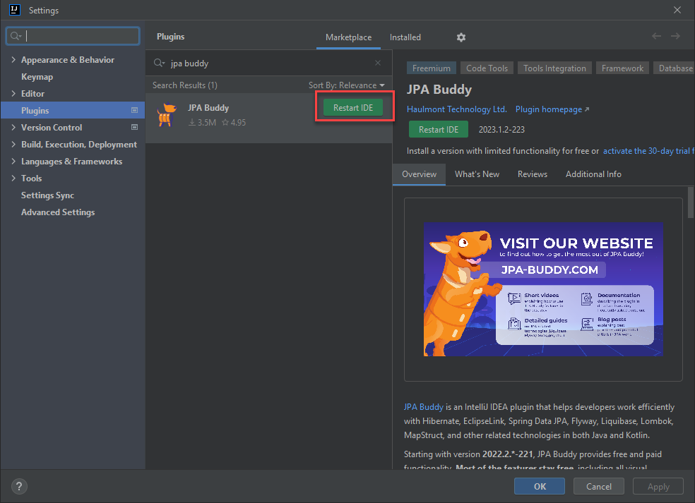
2. Cấu hình
Lưu ý: Trong file pom.xml phải có thư viện JPA
Nếu chưa có, click
vào đây để lấy thư viện
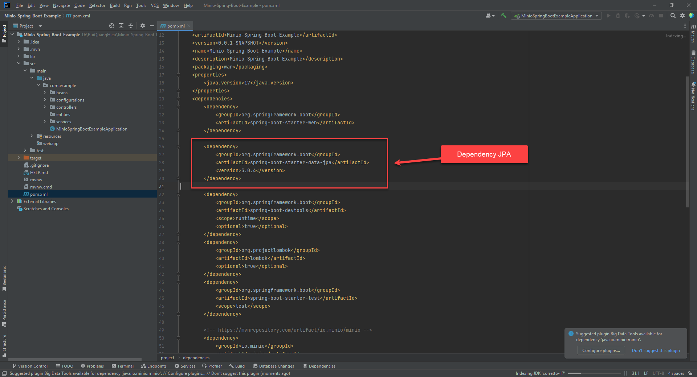
Chọn Package muốn tạo Entity -> New -> JPA Entities form DB
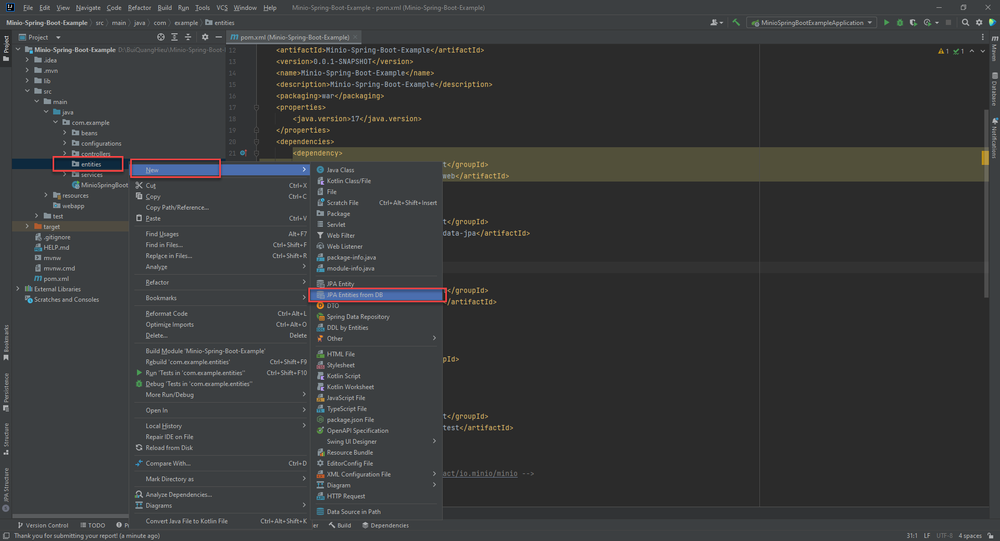
Click "+" để add connection
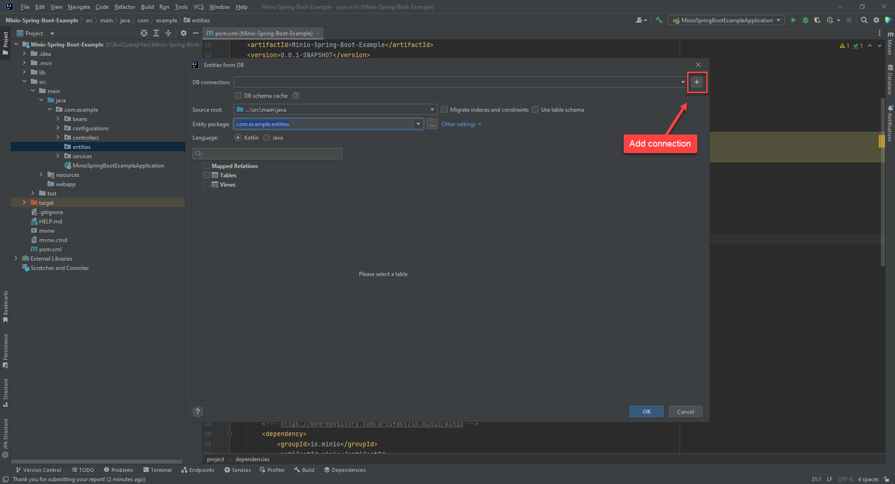
Tab "Data Sources" -> Click "+"
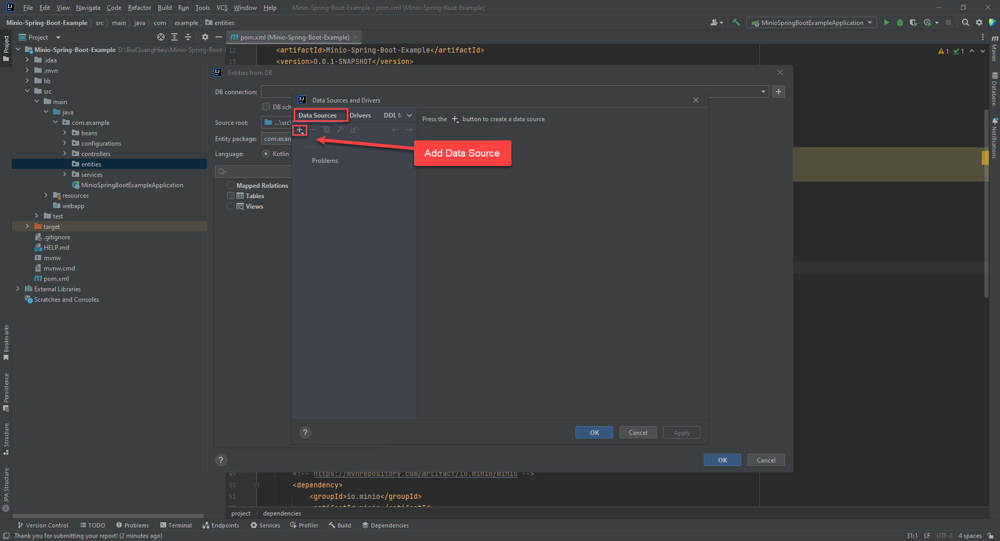
Database ví dụ của mình có 2 bảng là products & users
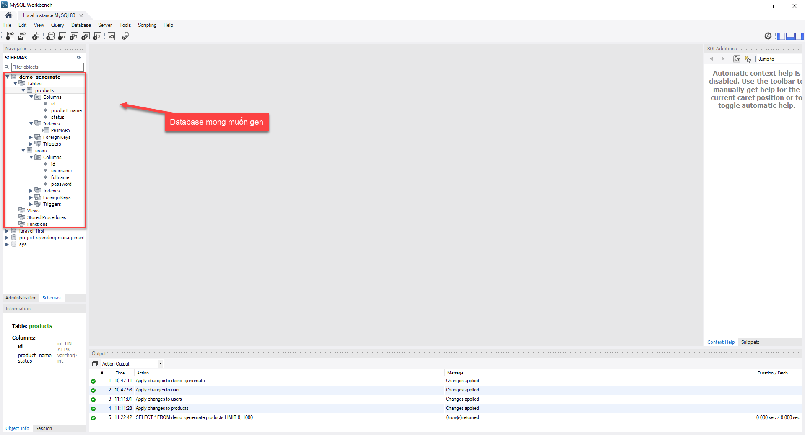
Quay lại giao diện Intellij, điền đầy đủ thông tin kết nối
Lưu ý: Nếu không có "Test Connection" thì nó sẽ thay thế bằng Install Driver, các bạn
install xong test connection
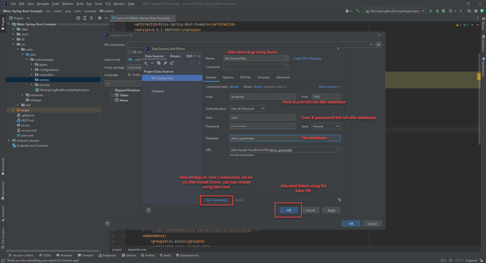
Khi kết nối thành công thì ở phần Tables sẽ hiển thị đầy đủ những table mà trong db đang có
Lưu ý: Trước khi bấm OK thì phải xem mình đang code ngôn ngữ gì để chọn đúng ngôn ngữ
=))), Kotlin or Java
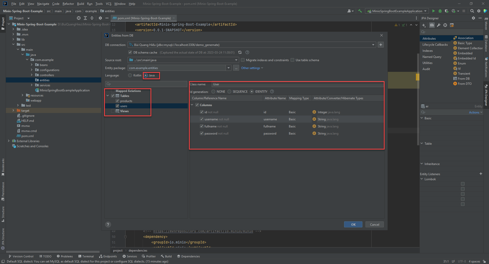
Và đây là thành quả
Nếu table mọi người có quan hệ thì khi generate xuống entity cũng có quan hệ theo
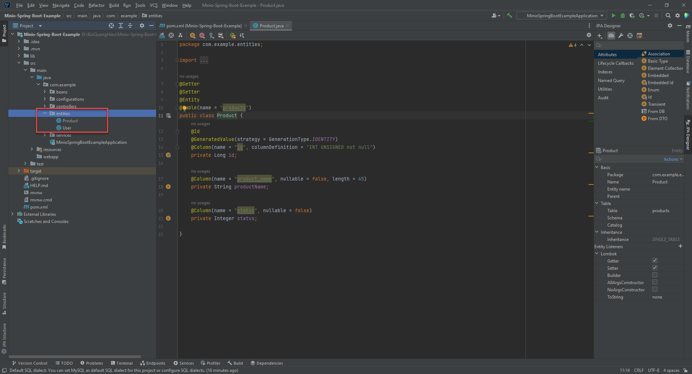